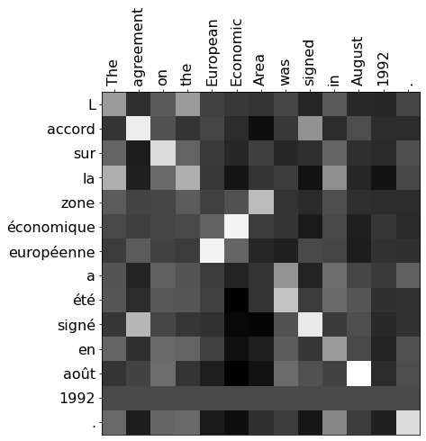

import pickle
import matplotlib.pyplot as plt
import numpy as np
# Load the word2int dictionaries
with open("./data/word2int_en.pkl", "rb") as f:
en_words = pickle.load(f)
with open("./data/word2int_fr.pkl", "rb") as f:
fr_words = pickle.load(f)
# Load the word embeddings
en_embeddings = np.load("./data/embeddings_en.npz")["embeddings"]
fr_embeddings = np.load("./data/embeddings_fr.npz")["embeddings"]
def tokenize(sentence, token_mapping):
tokenized = []
for word in sentence.lower().split(" "):
try:
tokenized.append(token_mapping[word])
except KeyError:
# Using -1 to indicate an unknown word
tokenized.append(-1)
return tokenized
def embed(tokens, embeddings):
embed_size = embeddings.shape[1]
output = np.zeros((len(tokens), embed_size))
for i, token in enumerate(tokens):
if token == -1:
output[i] = np.zeros((1, embed_size))
else:
output[i] = embeddings[token]
return output1 Introduction
In an earlier article we looked at the simple attention model used for language translation introduced in the Bhadanau, et al. (2014) paper.
The 2017 paper Attention Is All You Need introduced the Transformer model and scaled dot-product attention, sometimes also called QKV (Queries, Keys, Values) attention. Since then, Transformers have come to dominate large-scale natural language applications. Scaled dot-product attention can be used to improve seq2seq models as well. In this article, we’ll implement a simplified version of scaled dot-product attention and replicate word alignment between English and French, as shown in Bhadanau, et al. (2014).
2 Import Libraries & Setup
A Transformer model can learn how to align words in different languages. We won’t be training any weights here, so we’ve prepared some pre-trained aligned word embeddings from here.
3 Scaled Dot-Product Attention
The scaled-dot product attention consists of two matrix multiplications and a softmax scaling as shown in the diagram below from Vaswani, et al. (2017). It takes three input matrices, the queries, keys, and values.

Mathematically, this is expressed as
\[ \large \mathrm{Attention}\left(Q, K, V\right) = \mathrm{softmax}\left(\frac{QK^{\top}}{\sqrt{d_k}}\right)V \]
where \(Q\), \(K\), and \(V\) are the queries, keys, and values matrices respectively, and \(d_k\) is the dimension of the keys. In practice, Q, K, and V all have the same dimensions. This form of attention is faster and more space-efficient than what we implemented before with the simple attention of Bhadanau, et al. (2014) since it consists of only matrix multiplications instead of a learned feed-forward layer.
Conceptually, the first matrix multiplication is a measure of the similarity between the queries and the keys. This is transformed into weights using the softmax function. These weights are then applied to the values with the second matrix multiplication resulting in output attention vectors. Typically, decoder states are used as the queries while encoder states are the keys and values.
We will implement the softmax function with Numpy and use it to calculate the weights from the queries and keys. Let’s assume the queries and keys are 2D arrays (matrices). Note that since the dot-product of Q and K will be a matrix, we’ll need to take care to calculate softmax over a specific axis.
def softmax(x, axis=0):
""" Calculate softmax function for an array x
axis=0 calculates softmax across rows which means each column sums to 1
axis=1 calculates softmax across columns which means each row sums to 1
"""
y = np.exp(x)
return y / np.expand_dims(np.sum(y, axis=axis), axis)
def calculate_weights(queries, keys):
""" Calculate the weights for scaled dot-product attention"""
dot = np.matmul(queries, keys.T)/np.sqrt(keys.shape[1])
weights = softmax(dot, axis=1)
assert weights.sum(axis=1)[0] == 1, "Each row in weights must sum to 1"
return weights# Tokenize example sentences in English and French, then get their embeddings
sentence_en = "The agreement on the European Economic Area was signed in August 1992 ."
tokenized_en = tokenize(sentence_en, en_words)
embedded_en = embed(tokenized_en, en_embeddings)
sentence_fr = "L accord sur la zone économique européenne a été signé en août 1992 ."
tokenized_fr = tokenize(sentence_fr, fr_words)
embedded_fr = embed(tokenized_fr, fr_embeddings)
# These weights indicate alignment between words in English and French
alignment = calculate_weights(embedded_fr, embedded_en)
# Visualize weights to check for alignment
fig, ax = plt.subplots(figsize=(7,7))
ax.imshow(alignment, cmap='gray')
ax.xaxis.tick_top()
ax.set_xticks(np.arange(alignment.shape[1]))
ax.set_xticklabels(sentence_en.split(" "), rotation=90, size=16);
ax.set_yticks(np.arange(alignment.shape[0]));
ax.set_yticklabels(sentence_fr.split(" "), size=16);
This is a demonstration of alignment where the model has learned which words in English correspond to words in French. For example, the words signed and signé have a large weight because they have the same meaning. Typically, these alignments are learned using linear layers in the model, but we’ve used pre-trained embeddings here.
Let’s now complete the implementation of scaled dot-product attention using our calculate_weights function.
def attention_qkv(queries, keys, values):
""" Calculate scaled dot-product attention from queries, keys, and values matrices """
weights = calculate_weights(queries, keys)
return np.matmul(weights, values)
attention_qkv_result = attention_qkv(embedded_fr, embedded_en, embedded_en)
print(f"The shape of the attention_qkv function is {attention_qkv_result.shape}")
print(f"Some elements of the attention_qkv function are \n{attention_qkv_result[0:2,:10]}")The shape of the attention_qkv function is (14, 300)
Some elements of the attention_qkv function are
[[-0.04039161 -0.00275749 0.00389873 0.04842744 -0.02472726 0.01435613
-0.00370253 -0.0619686 -0.00206159 0.01615228]
[-0.04083253 -0.00245985 0.00409068 0.04830341 -0.02479128 0.01447497
-0.00355203 -0.06196036 -0.00241327 0.01582606]]4 Acknowledgements
I’d like to express my thanks to the great Natural Language Processing with Attention Models Course which i completed, and acknowledge the use of some images and other materials from the course in this article.